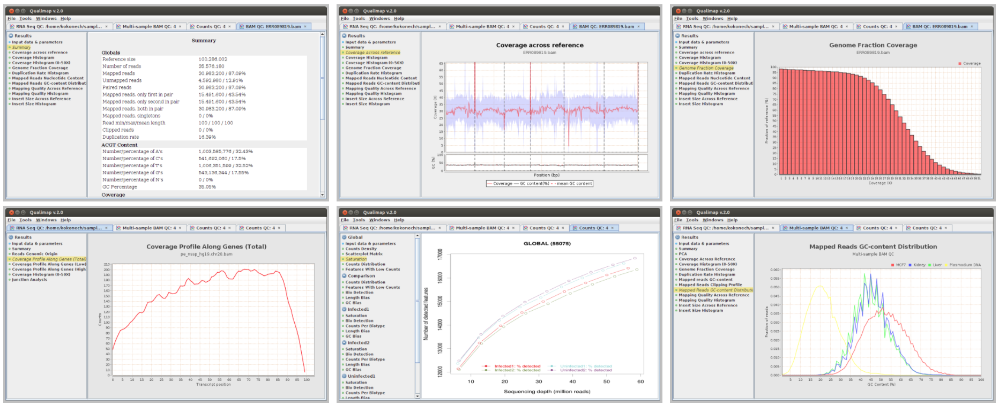

5. Create Summary Reports
We will use Qualimap to create summary reports from the generated bam files. As mentioned in the website, Qualimap examines sequencing alignment data in sam/bam files according to the features of the mapped reads and provides an overall view of the data that helps to detect biases in the sequencing and/or mapping of the data and eases decision-making for further analysis.
qualimap bamqc -c -bam input.bam
Here are some screenshots of the outputs:
At this stage we have created different type of summary report using FastQC and Qualimap. To create a unique summary that integrate and compare all the generated reports, we will use MultiQC. If all the reports are in the same directory and its sub-directories, you can run MultiQC as follows:
multiqc .
A list of programs that generate output files recognized by MultiQC are availble here: https://github.com/ewels/MultiQC
Multiqc will create a summary report in html format that will let you compare all the summary reports for each of your samples: